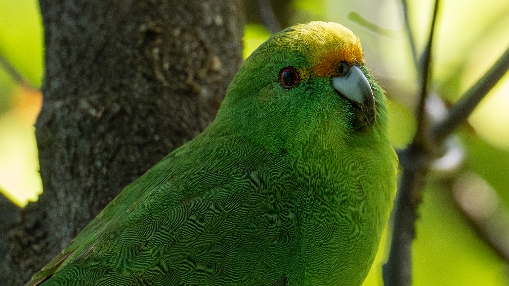
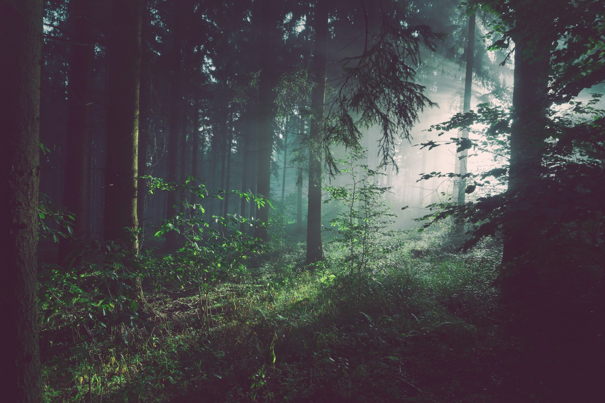
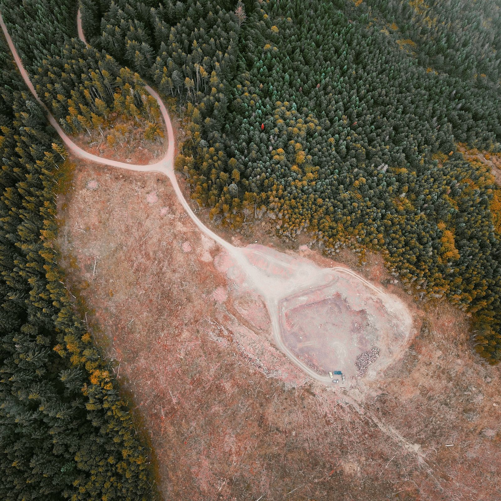
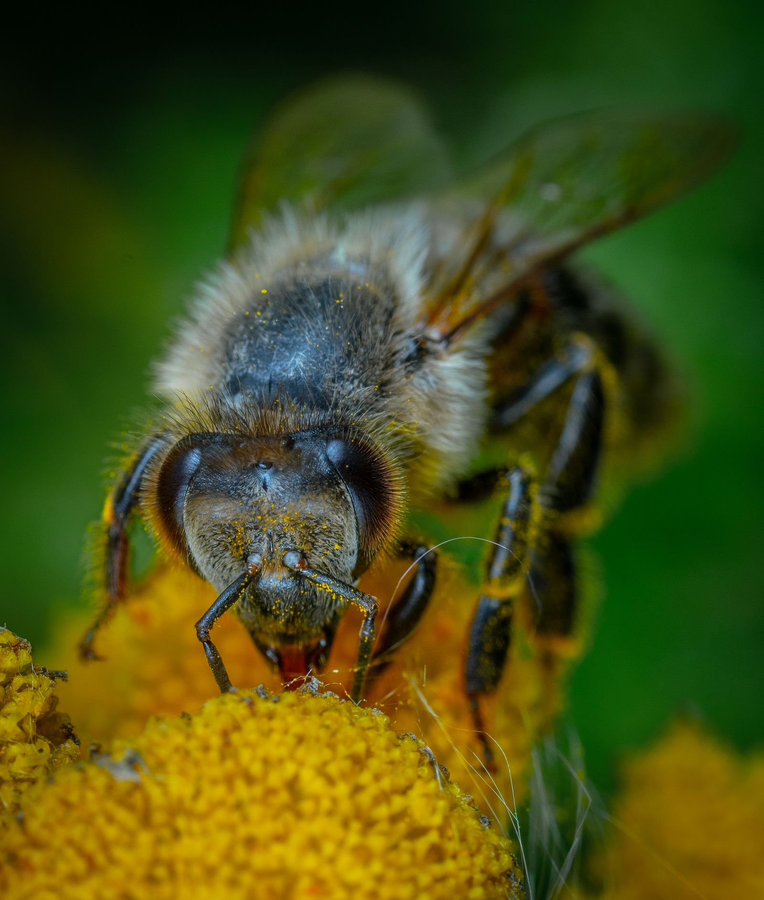
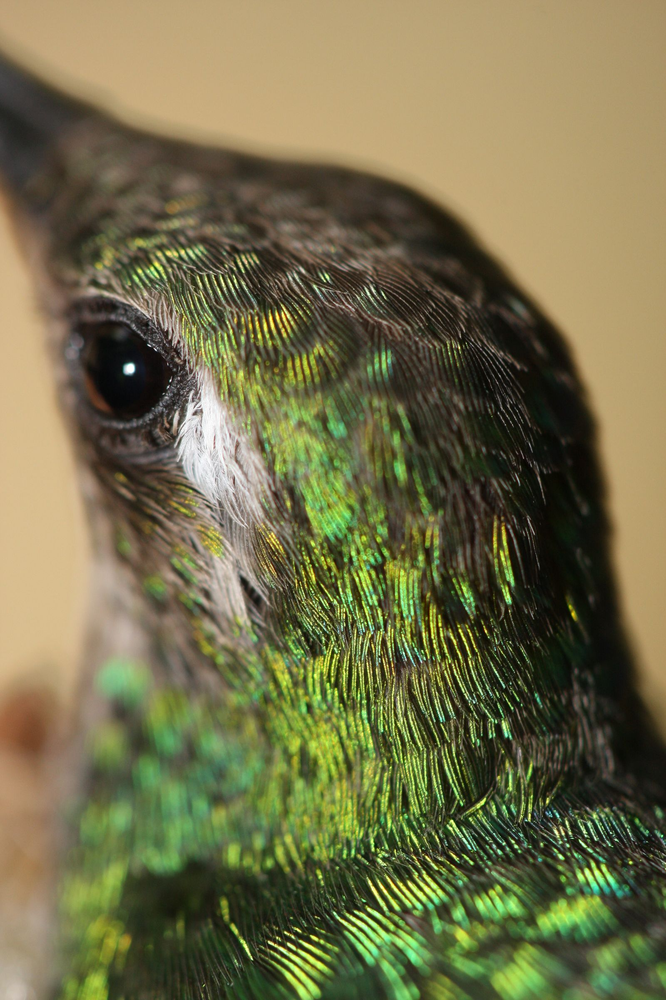
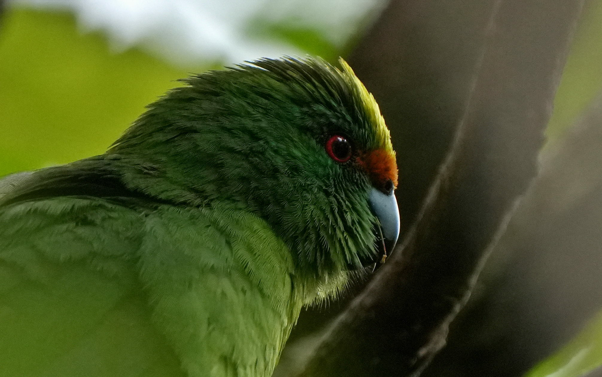
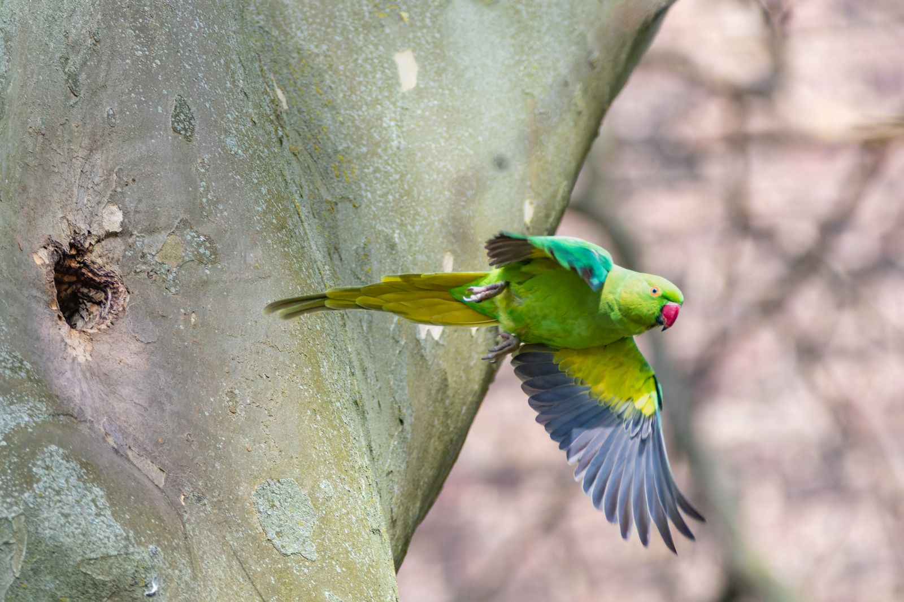
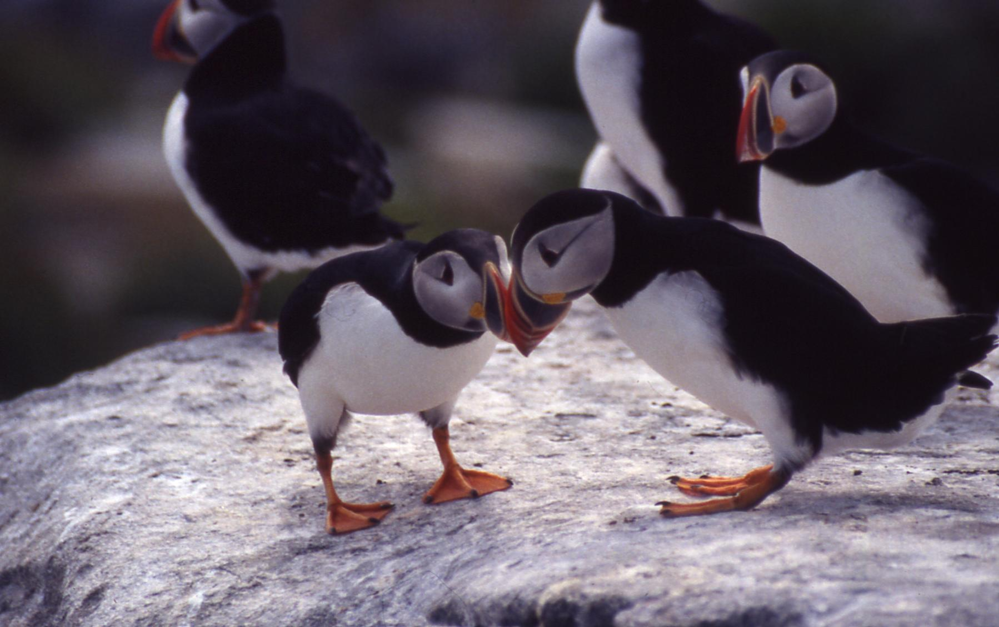
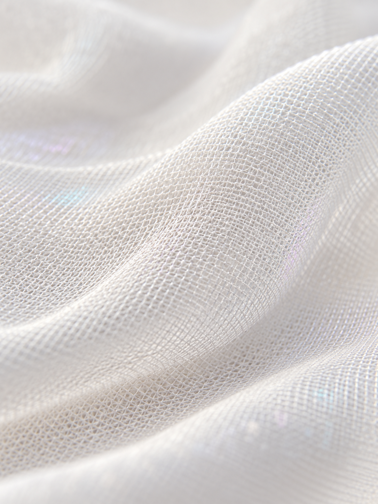

A signal
they recognise.
Colour and reflectance begin with the bird’s own visual world.
 Support the future
Support the future
PROJECT EROS / THE IDEA
Wearable designs that support the signals birds use to attract a mate.
Designed around their own perception, their own bodies and their own courtship behaviour.
Colour and reflectance begin with the bird’s own visual world.
Species-specific contours guide the cut, the panels and every contact point.
Flight, preening and feather condition guide how the wearable moves.

OUR FIRST SPECIES
Bird Lingerie designed around its own courtship signals.
Tested. Formally in use in 2095.

Bird Lingerie began with a courtship crisis. Habitat loss, disappearing insects and increased UV-B exposure weakened the visual signals birds use to attract a mate. Project EROS is OCES’s response to that loss.
Deforestation and fragmented forests separate feeding grounds, nesting sites and potential mates. OCES connects habitat restoration with species monitoring, so recovery has somewhere to happen.
We bring science and design together to protect endangered species — and the worlds they depend on.
2078–2095
How an ecological crisis became a national conservation mission.
Continuous habitats become isolated patches. Birds lose reliable feeding grounds, safe nesting sites and opportunities to encounter suitable mates.

Marketed as a cleaner, premium way to live, insect-free environments remove a vital food source. Declining pollination and disrupted food chains leave birds with less food and poorer nutrition.

Pollution and a reversal in ozone-layer recovery increase UV-B exposure. Birds may remain fertile while colour, iridescence and ultraviolet reflection lose their strength. Breeding declines, dawn choruses fade, resistant pests rebound and food prices rise: the Avian Food Inflation.

Bibi and the conservation science team found OCES. The Orange-fronted Parakeet crisis drives its first programme, connecting habitat recovery, species monitoring and experimental courtship design.

Project EROS brings conservation science and design together. Prototypes begin with the bird’s feather structure, wing movement and courtship signals, so the design supports its natural behaviour.

Project EROS is now developing Bird Lingerie for other bird species. Each new design begins with a separate study of that species’ signals, movement and needs.

Multiple rounds of experiments and testing completed. Bird Lingerie is now formally in use.
We are developing Bird Lingerie for other bird species, with a distinct design brief for each.

Ultra-fine technical weave.
Soft contact. A quiet iridescence.
Relative increase in courtship success.1
Successful courtship with EROS.1Up from 32% without the wearable.
Formally in use.
1. Fictional 2095 programme figures. Courtship success: 32% baseline → 48% with EROS.
Species-specific wearable designs built around avian courtship — colour, movement and perception.
We map each species’ visual signals before selecting colour. Pigment, contrast and reflectance are evaluated from the bird’s perspective, with the original courtship display as the reference.
Bird Lingerie supports the signals birds already use to attract a mate. Their perception, behaviour and movement set the design brief.
From designs in use to those in development, flight, feather condition and animal welfare guide the work.
What is Bird Lingerie?Filo builds a physical parakeet model to study its volume, contours and panel placement. The aim: Bird Lingerie that fits precisely, from the first pattern to the next prototype.
Original notebook pages, three hand-modelling photographs and one AI-generated concept study. Concept drawings are separate from programme testing records.
The complete set supplied by the project author. Early names, planning notes and alternative directions remain part of the original archive.
Showing 6 stories
Support species research, responsible prototypes
and habitat protection.
Opening the partnership programme